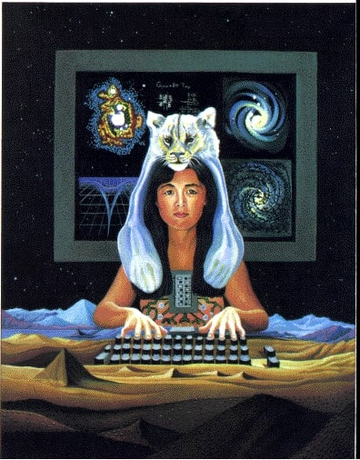
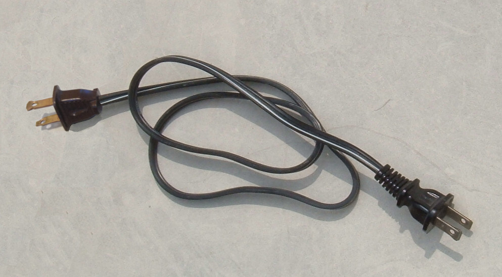

On the heterosexual matrix, gender liberation, and the technologists in power.
How is the heterosexual matrix perpetuated through technology?
How are aspects of it encoded in not only software, but hardware design?
How can the utilization of technological apparatuses facilitate a more expansive, limitless form of expression?